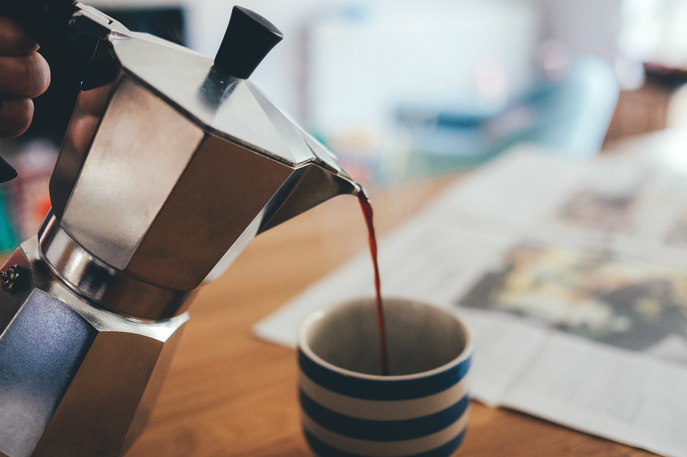
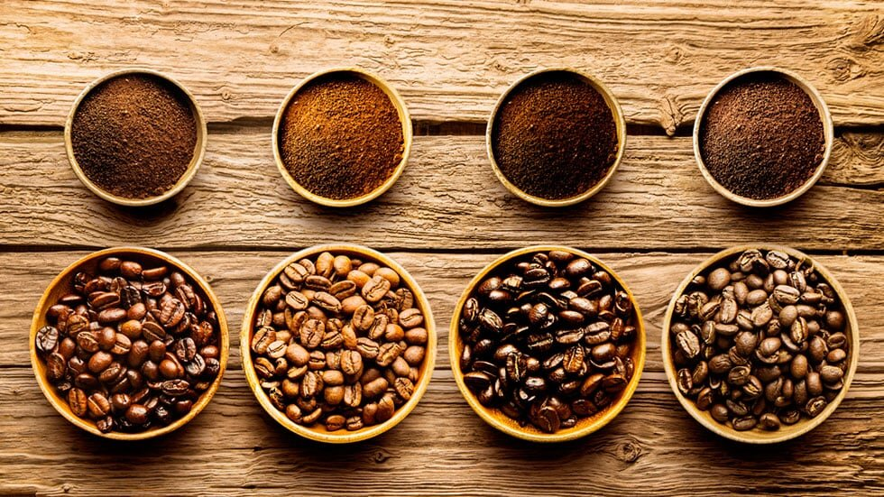
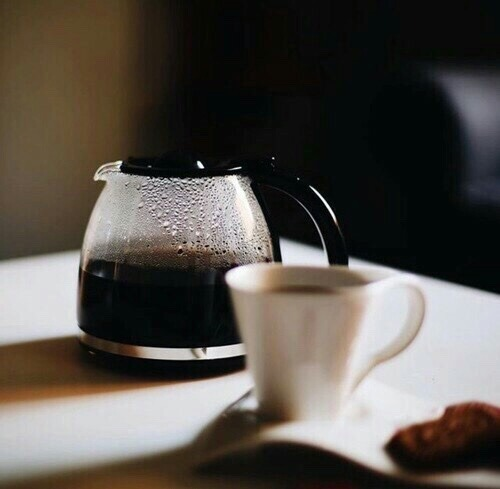
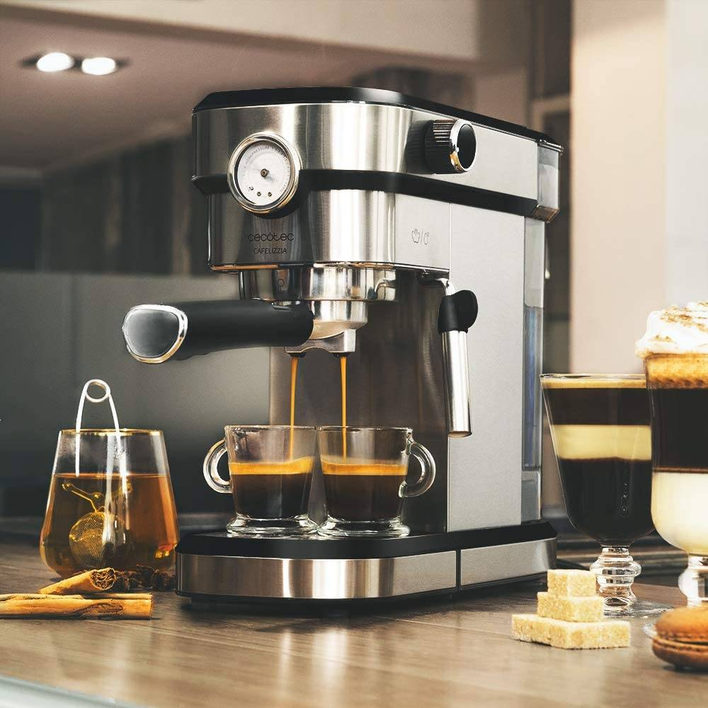

¿Cómo preparar un buen café en casa?
Para preparar un buen café en casa tenés que prestar atención a cosas sencillas que van a mejorar mucho el
sabor de tu bebida. En este artículo te comparto 10 pasos fáciles para preparar un buen café en casa.
Leer más

Café de especialidad, ¿cómo prepararlo en casa?
Mucho se habla sobre el concepto de café de especialidad e incluso existe alguna confusión con el café
gourmet. Por este motivo en este post queremos explicarte qué es el café de especialidad y cómo puedes
prepararlo en casa.
Quiero prepararlo

10 Beneficios del café que quizás desconozcas
El café, una de las bebidas más consumidas en el mundo. Los últimos estudios llevados a cabo ratifican que el
consumo moderado de café tiene beneficios para la salud que van más allá de su capacidad estimulante de la
cafeína.
Quiero saber más

¿Cómo conservar el café para que no pierda aroma ni sabor?
El aroma del café, es un estimulante en cada despertar, es ese algo que nos inspira a comenzar un buen día.
Esto es lo que sucede.
Ver
más
Diferencias entre cafetera normal y cafetera express
Son muchos los factores que influyen en su preparación, en especial el tipo de cafetera.
Las cafeteras de filtro tienen un bajo costo y tiene una gran capacidad de tazas de café que se pueden hacer
a la vez.

Las cafeteras expresso te brindan la posibilidad de preparar distintos tipos de café. Además, contás con un
espumador de leche evaporada. El café lo tenés listo en unos segundos.

Descubrí la diferencia